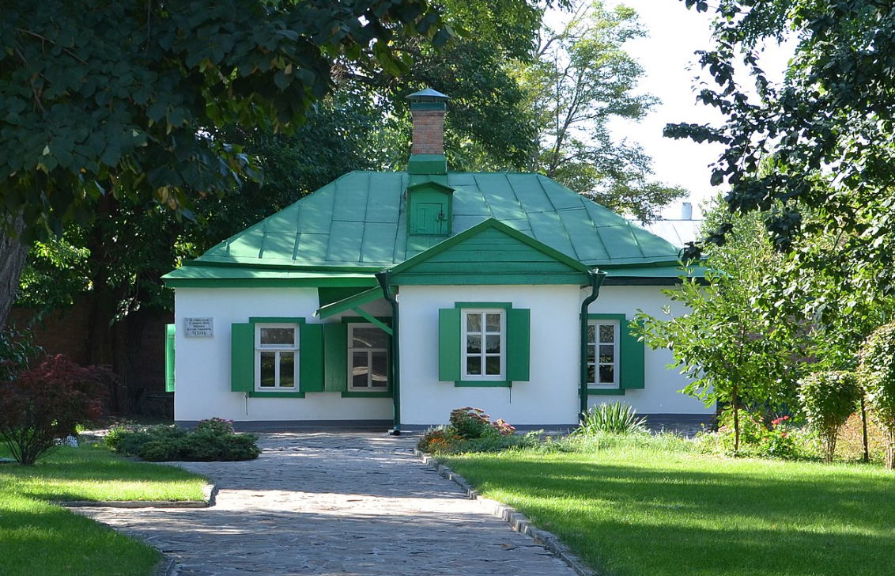
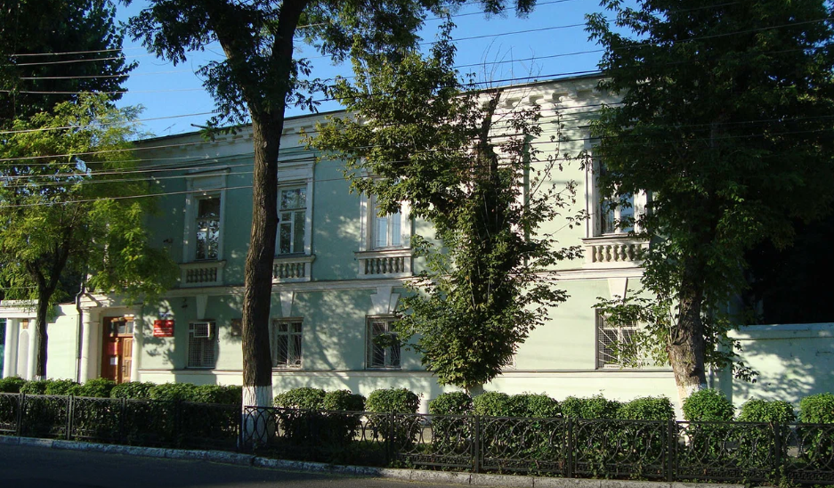
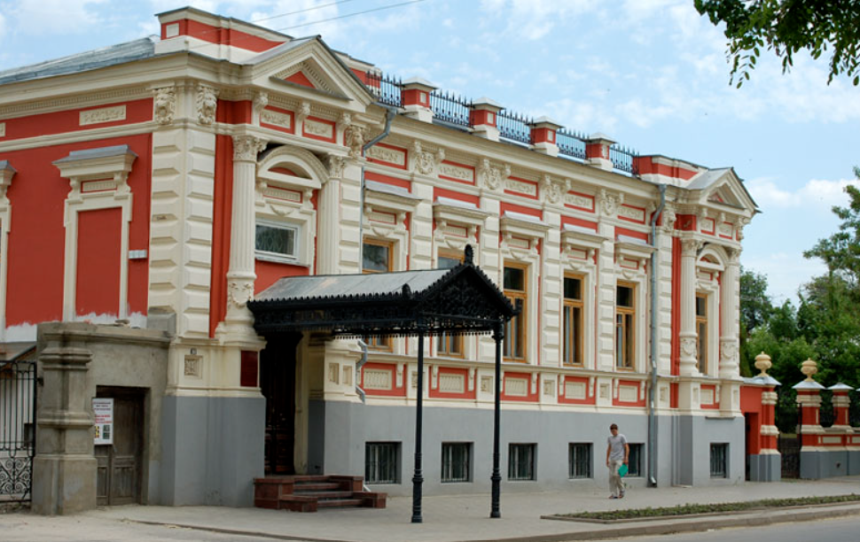
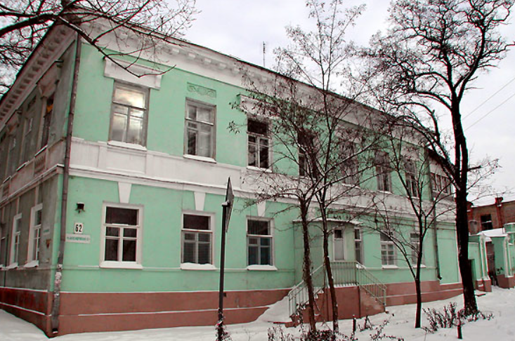
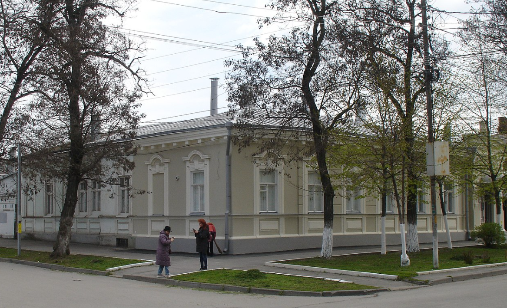
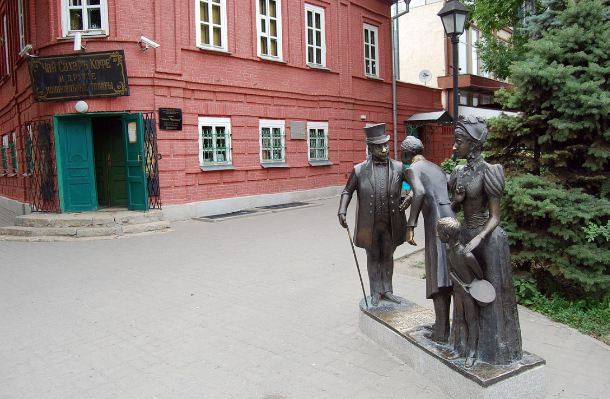

1

«Домик Чехова»
Музей «Домик Чехова» - мемориальный музей, который расположен на ул. Чехова 69, этот небольшой флигель является тем местом, где родился известный писатель. В 1850 году было построено само здание, В 1859 году в домике поселилось семейство Чеховых, через год родился сам Антон Павлович и семейство прожило в флигеле до 1861 года.
К пятидесятилетию со дня рождения Чехова, в 1910 году, по инициативе Е. М. Гаршина, брата известного писателя, на стене дома появилась мемориальная доска. Гаршин же был инициатором создания в домике постоянного музея.
К пятидесятилетию со дня рождения Чехова, в 1910 году, по инициативе Е. М. Гаршина, брата известного писателя, на стене дома появилась мемориальная доска. Гаршин же был инициатором создания в домике постоянного музея.
В 1926 году возле дома впервые зацвели саженцы вишнёвых деревьев, высаженных на деньги горсовета. Тогда же открылась первая музейная экспозиция, иллюстрирующая таганрогский период жизни Антона Павловича. Губа и Кузьменко совмещали обязанности экскурсоводов и смотрителей музея.
2

Дом Муссури
Купец Андрей Дионисович Муссури родился в 1827 году. Был купцом первой гильдии, греческий подданный, уроженец острова Кефалония. В Таганрог прибыл в 1874 году и поселился в доме постройки 70-х годов 19 века. Указом Императора был назначен испанским вице-консулом в Таганроге. Андрей Дионисович был хорошо знаком с купцом первой гильдии Панаги Синодино и Марком Вальяно.
Упоминание о Муссури сохранилось в газете «Полицейский листок» от 15 марта 1869 года было напечатано такое сообщение:
«Открыты 10 числа марта навигация перво-прибывшим из заграницы итальянским бригом «Голета» , именуемым Курьере ди Триест , под управлением шкипера Франческо Греко, с груши двух тысяч ящиков апельсинов и лимонов, адресованных Андрею Муссури». Скончался Андрей Муссури в 1891 году на 65 году жизни от холеры.
В 1925 году в доме размещался окружной военкомат и вневойское объединение В.Н.О. Военкомат на этом месте располагается и по сей день.
3

Особняк Хандрина
Особняк Хандрина — старинный особняк в Таганроге (ул. Александровская, 56), памятник архитектуры 1870-х годов. Особняк изначально был построен по заказу почётного гражданина г. Таганрог в 1870 г. по проекту архитектора Тенишева.
С 1873 по 1916 гг. владельцами дома были только члены семьи Хандриных, которые перед революцией уехали в Харьков. После революции в здании размещались городская военная комендатура. В 1920 году здание было передано горкомхозу. С фасада был снят дворянский герб и скульптура.
В здании располагался детский приёмник для беспризорников, музыкальная школа. После проведения реставрационных работ в 1976 году в бывшем особняке Хандрина была открыта Таганрогская картинная галерея. Нынешне в особняке расположена Таганрогский художественный музей.
4

Дом семьи Парнох
Этот дом принадлежал семье Парнох, многие члены этой семьи были талантливыми людьми. Главой семьи являлся Яков Соломонович Парнох, его сын Валентин и две дочери Софья и Елизавета все стали довольно известным поэтами и переводчиками.
Но всё-таки самый известный член этой семьи скорее всего Софья Парнюк (Парнох), которая была тесна связана с жизнью известной писательницы Марины Цветаевой. Всю жизнь она была бездомна и безбытна. Вскоре после вторичной женитьбы отца (мать умерла при рождении близнецов) она ушла из дому.
С ранней юности С. Парнок писала стихи, выступала как переводчик и литературный критик под псевдонимом Андрей Полянин.
При этом сам дом не особо документирован и типичен для домов Таганрога 19ого века, рядом с домом находиться жилое здание.
К сожалению этот дом не получил должного внимания и находиться не в лучшем состоянии.
5

Дом-музей И. Д. Василенко
Дом-музей И. Д. Василенко
Музей в, расположенный в доме, в котором с 1923 по 1966 год жил писатель Иван Дмитриевич Василенко, лауреат Сталинской премии. Входит в состав Таганрогского государственного литературного и историко-архитектурного музея-заповедника. Располагается по адресу ул. Чехова, 88.
Дом, где жил Иван Василенко со своей многочисленной семьёй с 1923 по 1966 год, был построен ещё в 1906 году и является объектом культурного наследия регионального значения.
Писатель не был родом из Таганрога, но здесь он прожил всё свою оставшуюся жизнь с возраста семи лет, создавая свои произведения, и умер 26 мая 1966 года от туберкулёза. На стене здания установлена мемориальная табличка, посвящённая писателю.
6

«Лавка Чеховых»
Дом-музей И. Д. Василенко
Музей в городе Таганрог Ростовской области, основанный в 1975 году и открытый 3 ноября 1977 года. Расположен в доме 1840-х годов, который семья Чеховых арендовала в 1869—1874 годах.
Входит в состав Таганрогского государственного литературного и историко-архитектурного музея-заповедника. Семья жила на втором этаже дома, а внизу, на первом этаже, располагалась бакалейная лавка отца.
Музей в доме был открыт 3 ноября 1977 года на основании Постановления ГК КПСС и Горисполкома Таганрога от 1 января 1975 года.
Экспозиция создана, чтобы рассказать о детских годах А. П. Чехова. Представлен интерьер времён детства писателя, некоторые работы членов его семьи, а также семейные фотографии.
13 мая 2011 года перед музеем был установлен памятник героям рассказа А. П. Чехова «Толстый и тонкий».